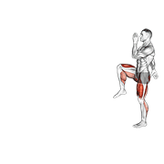
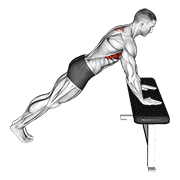

详细热身指南
一句话结论：热身按固定顺序走完四段——一般热身 3-5 分钟、动态拉伸 5-7 分钟、激活 3-5 分钟、专项 4-8 分钟，全程 15-25 分钟。上场前心率落在最大心率的 60-70%（白话：能说短句、不喘），专项段升到 70-80%。训练前只做动态拉伸，静态拉伸留到训练后；热身总时长到 25 分钟就上场，别用热身把体力耗掉。
为什么热身重要？热身可以提高肌肉温度、增加关节活动度、激活神经系统、降低受伤风险。训练学共识是：充分热身能显著降低急性损伤概率；具体幅度因人、因项目而异，这里不做量化承诺。
分层处方：基础版 / 进阶版 / 精英版
先认两个词。最大心率（HRmax）白话就是"你全力冲 30 秒也追不上去的那个心跳数"，业余用 220 减去年龄估算（30 岁约 190 bpm）。RPE 是主观用力程度，10 分是拼到说不出话，3 分是能边走边聊天的慢跑。三档的差别不在"热多久"，而在专项那一段有多像比赛、以及心率怎么走。
基础版 每周打球 ≤2 次
- 各阶段分钟数：一般热身 3 分钟 + 动态拉伸 5 分钟 + 激活 3 分钟 + 专项 4 分钟，合计 15 分钟。
- 心率目标：前 3 分钟到 HRmax 55-65%（30 岁约 105-124 bpm），第 15 分钟到 60-70%（约 114-133 bpm）。手摸颈动脉数 15 秒乘 4。
- 动作/剂量：动态拉伸每动作 2 组 × 8-10 次（髋绕环、弓步转体、前后摆腿各 2 组），激活 3 组 × 12 次（臀桥 2 组、弹力带外旋 1 组），组间不歇、四段顺序走完一遍算 1 轮。
- 强度：全程 RPE 2-3，能正常说话；每个动态动作 8-10 次，幅度从小到大，不弹震。
- 赛前时间轴：赛前 20 分钟开始——0-3 分钟慢跑与开合跳、3-8 分钟动态拉伸、8-11 分钟激活、11-15 分钟挥拍与轻对打，留 5 分钟坐下喝水。
- 频率：每次打球都做，每周 3 次以内；同一天二练之间隔 ≥4 小时，第二次热身可压到 10 分钟。
- 单次时长上限：热身 15 分钟（高温天压到 10-12 分钟）、整理 10 分钟。超过 20 分钟就开始掉体力，说明做多了。
- 进阶触发：连续 4 次训练，热身结束时能打出正常速度的高远球，关节走到最大幅度没有"卡顿感"。
进阶版 每周打球 3-4 次
- 各阶段分钟数：一般热身 5 分钟 + 动态拉伸 6 分钟 + 激活 5 分钟 + 专项 8 分钟，合计 24 分钟。
- 心率目标：第 5 分钟到 HRmax 60-65%，专项段按 70-80% 做间歇：30 秒快 + 30 秒慢 × 6 组。
- 强度：RPE 4-6；敏捷梯 3 组，原地跳与侧向跳各 5 次，启动步 10 次。
- 落地控制：原地跳与侧向跳各 5 次，要求落地后单脚站稳 3 秒不晃，晃了就重来一次。
- 赛前时间轴：赛前 30 分钟开始——0-5 分钟升温、5-11 分钟动态拉伸、11-16 分钟激活与落地控制、16-24 分钟专项对打，最后 6 分钟降心率。
- 频率：每周 3-4 次训练；两次高强度训练之间隔 ≥24 小时，赛前 24 小时内只做 1 次 15 分钟减量热身。
- 单次时长上限：热身 25 分钟、整理 15 分钟。气温低于 10 ℃ 时热身加到 25-30 分钟，但强度不变。
- 进阶触发：连续 2 周，全场拉吊 2 分钟动作不变形，且赛后第一局非受迫失误不超过 3 个 → 升精英版。
精英版 每周 ≥5 次 / 有教练
- 各阶段分钟数：5 + 8 + 7 + 5-10，合计 25-30 分钟；场馆冷、身体紧取上限，空调场馆取下限。
- 心率目标：赛前 10 分钟维持 HRmax 70-80%，赛前 5 分钟刻意回到 65-75%（约 124-143 bpm）——这是主动降下来，不是冷掉。
- 强度：RPE 5-7；启动步 3 组 × 5 次（每次 ≤5 秒）、多球高远 20 个、吊球 10 个、轻杀 10 个。
- 赛前时间轴：按开赛时间倒推——赛前 45 分钟补水 200-300 ml 并升温，20 分钟进入动态拉伸与激活，10 分钟上场适应，2 分钟降到 65-75% 并做 4 轮 4-7-8 呼吸，上场前 30 秒两个固定动作。
- 频率：每周 5-6 次训练；比赛周热身总量下调 20%，但每次仍做满 25 分钟，只减专项段的对拉球数。
- 单次时长上限：热身 30 分钟封顶、整理 20 分钟封顶；一天两赛之间只做 10 分钟二次热身（慢跑 3 分钟 + 动态拉伸 4 分钟 + 挥拍 3 分钟）。
- 进阶触发：能靠自我感觉把赛前心率控制在目标区间 ±5 bpm 内，且连场第二场的首局启动速度与第一场一致。
- 恢复：同一肌群激活间隔 ≥24 小时，一天两练之间隔 ≥4 小时；热身安排在大强度课前 20-30 分钟做完，热身后尽量在 15 分钟内上场。
三档通用的顺序规则：顺序永远是"升温 → 活动度 → 激活 → 专项"，不能换。热身不是训练，它只做两件事：把体温和心率抬起来、把要用的关节和肌肉叫醒。手感要靠在专项段多打几个球，不是靠在第一阶段多跑 5 分钟。
⏱️ 热身时间计算
| 年龄 | 建议热身时间 | 说明 |
|---|---|---|
| 18-30岁 | 15分钟 | 标准热身时间 |
| 30-40岁 | 18分钟 | 需要更充分的热身 |
| 40-50岁 | 20分钟 | 关节需要更多时间活动 |
| 50岁以上 | 25分钟 | 必须充分热身 |
🔥 阶段1：一般热身（5分钟）
目的是提高心率和体温，为后续热身做准备。
🌊 阶段2：动态拉伸（5分钟）
通过动态动作增加关节活动度和肌肉弹性。
🌊 动态拉伸动图
每个动作 8–10 次，幅度从小到大，不要弹震。



⚡ 阶段3：激活训练（3分钟）
激活关键肌群，为专项训练做准备。
⚡ 激活训练动图
臀中肌、肩胛与肩袖是羽毛球最容易"睡着"的三处，上场前务必唤醒。



动图素材 © Gym visual — gymvisual.com（180×180，经 hasaneyldrm/exercises-dataset 再分发，保留署名）；来源与逐文件对照见 images/exercises/README.md。
🏸 阶段4：专项热身（2-3分钟）
模拟羽毛球动作，让身体进入运动状态。
重要提醒：
• 热身前不做静态拉伸！静态拉伸会降低肌肉力量
• 热身强度要逐渐增加，不要一开始就做高强度动作
• 如果感到疼痛，立即停止并检查动作
📋 热身检查清单
| 阶段 | 检查项目 | ✓ |
|---|---|---|
| 一般热身 | 心率是否提高？身体是否发热？ | ☐ |
| 动态拉伸 | 关节活动度是否增加？肌肉是否放松？ | ☐ |
| 激活训练 | 目标肌群是否被激活？ | ☐ |
| 专项热身 | 动作是否流畅？是否找到手感？ | ☐ |
自测与进阶标准
热身效果要在场上看，不在体重秤上看。每 2 周挑一次训练课，让同伴在固定时间点帮你测一遍下表，达标了再升档；任何一项不达标就按右列退阶，别把"状态不好"当借口跳过。
| 测试动作 | 通过标准（数字） | 不达标时的退阶 |
|---|---|---|
| 5 分钟心率响应 | 第 5 分钟心率达 HRmax 60-65%（30 岁约 114-124 bpm） | 第一阶段从 3 分钟延到 6 分钟，只做慢跑与开合跳；仍不达标则加到 8 分钟并降低动作难度，别靠加大强度硬拉心率 |
| 深蹲到底 | 脚跟不离地、下蹲到大腿与地面平行，全程无卡顿，能完成 10 次 | 退回扶椅半蹲 2 组 × 10 次 + 踝关节绕环 15 圈/侧，练 2 周再测；脚跟离地者先放松小腿 30 秒/侧 |
| 弓步转体（胸椎旋转） | 每侧 8 次，躯干转动幅度左右差 <10 度，腰部不代偿 | 退回侧卧胸椎旋转 2 组 × 8 次/侧，只在无痛范围内转动；两侧差异明显者弱侧多做 1 组 |
| 单脚落地稳定 | 跳起落地后单脚站稳 3 秒不晃、膝盖不内扣，左右各 3 次 | 退回双脚落地保持 2 秒 × 5 次；再退到扶墙单脚站立 3 组 × 20 秒/侧，先练睁眼版本 |
| 启动步反应 | 听到信号后 10 次启动，每次第一步 ≤0.3 秒落地（用手机慢动作回看） | 退回原地小碎步 30 秒 × 3 组 + 启动步 10 次不要求速度，先把"先动脚不动手"做对 |
| 专项手感 | 热身结束时连续 15 个高远球落在底线 1 米内，动作不变形 | 把专项段从 4 分钟加到 6 分钟，只做半场高远对拉；仍打不出质量就先查握拍与击球点，不急着加量 |
| 整理后状态 | 整理结束后 10 分钟心率 <100 bpm，第二天小腿与肩后侧无紧绷感 | 冷身从 2 分钟延到 4 分钟 + 静态拉伸每部位 30 秒 × 2 轮；小腿紧绷者加泡沫轴 30-60 秒/侧 |
错误 → 原因 → 纠正
下面七组，前四组在录像里看得出来（脚步、顺序、呼吸），后三组要靠自己感觉和同伴观察。一次只改一条，改完再练 2 周。
| 错误（录像可见） | 原因 | 纠正 |
|---|---|---|
| 用静态拉伸代替动态拉伸 | 把"拉伸"等同于"热身"，训练前做长时间静态拉伸会让肌肉力量短暂下降 | 训练前只做动态动作（弓步走、腿摆动、手臂环绕），每个 8-10 次；静态拉伸每个 20-30 秒、每部位 2 轮，全部挪到训练后 |
| 跳过热身直接上对抗 | 想省时间，或者觉得"打着打着就热了" | 最低保障版也要 12 分钟：慢跑 4 分钟 + 动态拉伸 5 分钟 + 挥拍与轻对打 3 分钟；宁可少打一局，也不省这 12 分钟 |
| 热身做到出汗、开始喘 | 把热身当训练做，第一阶段强度就拉到 HRmax 80% 以上 | 第一阶段控制在 HRmax 55-65%，全程 RPE ≤3、能说短句；热身超过 25 分钟还没上场，脱衣降温、补 150-200 ml 水 |
| 两侧不对称也没发现 | 身体长期偏一侧（持拍侧、惯用腿），热身的活动幅度左右确实不同，但没人在意 | 每个单侧动作先做弱侧，弱侧能做几次就做几次；幅度差 ≥10 度时，弱侧多做 1 组，连续 2 周记录差值 |
| 激活段只摆姿势，肌肉没有真正发力 | 弹力带阻力太轻、或者动作快到靠惯性完成 | 选一个你能标准完成 12-15 次的阻力，向外 2 秒、回位 2 秒；做完 2 组应感觉臀部或肩后有明确用力感，完全没有就换重一号 |
| 天气冷还按夏天的热身时长走 | 低温下肌肉温度上升更慢，同样的 15 分钟不够 | 气温低于 10 ℃ 时热身加到 25-30 分钟，第一阶段加入原地高抬腿 30 秒 × 3 组与深蹲跳 10 次，穿长裤热身、热了再脱 |
| 热身结束时心跳还在高位就开打 | 把"越兴奋越好"当成准备充分，第一局前 5 分就打不出落点 | 上场前 2 分钟把心率降到 HRmax 65-75%（约 124-143 bpm），做 4 轮 4-7-8 呼吸（吸 4 秒、屏 7 秒、呼 8 秒），说一个关键词再上 |
精英细节
同样 15-25 分钟，职业队里多做的七件事——不加时间，只改做法。
- 用鼻腔呼吸控制第一阶段强度。热身能用鼻子呼吸说明强度还低；一旦必须张嘴喘，就把速度降回来。这一段的任务是升温，不是产生乳酸。
- 同一套热身顺序，练到不用想。动作顺序固定到第几拍做哪个动作都不变。比赛日最怕临场改流程，固定顺序本身就能减少紧张。
- 拿录像和上场第一局对照。每周录 1 次热身，重点看单脚落地那 3 秒。热身里站不稳，比赛里的急停就一定歪。
- 热身按"身体最紧的部位"加料，而不是全套加量。只给当天最紧的 1-2 个部位多加 1 组活动，不整体加时。加全套等于给自己加负担。
- 专项段模拟比赛节奏，而不是只对拉。进阶和精英档的专项段按 30 秒快 + 30 秒慢的间歇走，心率到 HRmax 70-80%。比赛是"冲一阵、歇一阵"，热身也要长这个形状。
- 体能与技术课的热身分开设计。技术日把专项段加到 10 分钟；体能日把动态拉伸加到 8 分钟并加入深蹲、弓步的准备组（用 50-60% 重量做 1 组 × 8 次）。
- 比赛周只减量，不改流程。热身总量下调 20%、专项段对拉球数减半，但时间骨架和动作顺序一动不动；比赛日绝不试新动作、新贴扎、新鞋。
安全边界：以下情况不要按本页流程热身，先就医——发热或急性感染期、静息时胸痛或异常心悸、未控制的高血压、48 小时内的急性扭伤或拉伤、站立时眩晕、妊娠中晚期未获医生许可。
出现这些信号立刻停止热身并找教练或就医：热身中心率不升反降、头晕眼花、单侧小腿肿胀发热、关节"卡住"或打软腿、疼痛随动作幅度加重、胸闷。
感冒发热期不要用热身"把汗逼出来"；伤后复出者热身时长可加 30%，但强度从 RPE 2 起，任何疼痛都不要"再试一次"。
依据说明：本页参数属于三类来源，没有一句来自虚构文献。
1）NSCA CSCS 训练学框架：动态拉伸优先于静态拉伸的准备活动顺序、训练前长时间静态拉伸会短暂降低肌肉输出、RPE 自评强度、心率区间按最大心率百分比划分的取值逻辑。
2）运动生理常识：体温与肌肉温度升高有助于收缩效率、肌肉黏滞性随温度下降而上升、间歇式运动的心率回落速度反映恢复能力、低温环境下需要更长升温时间。
3）项目惯例：省队与体校赛前 25-30 分钟热身的阶段配比、按开赛时间倒推的启动时间轴、连场之间 10 分钟二次热身、以录像与落地稳定作为准备质量判定手段。
本页不写"某研究表明"这类无出处表述，也不承诺任何降低受伤概率的具体百分比。个人心脏或关节有病史者，请以医生与教练的现场评估为准。
最后更新：2026-09-16 · 内容标准 v2 · 发现错误或有更好的练法？在 GitHub 提 Issue · 文件：43-warmup-detailed.html